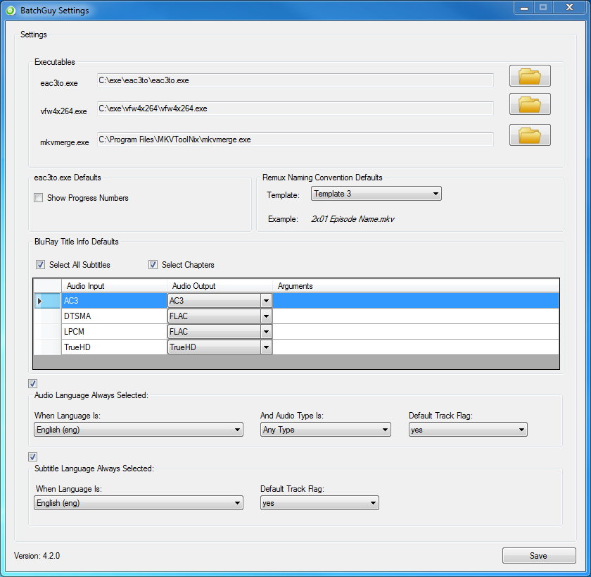
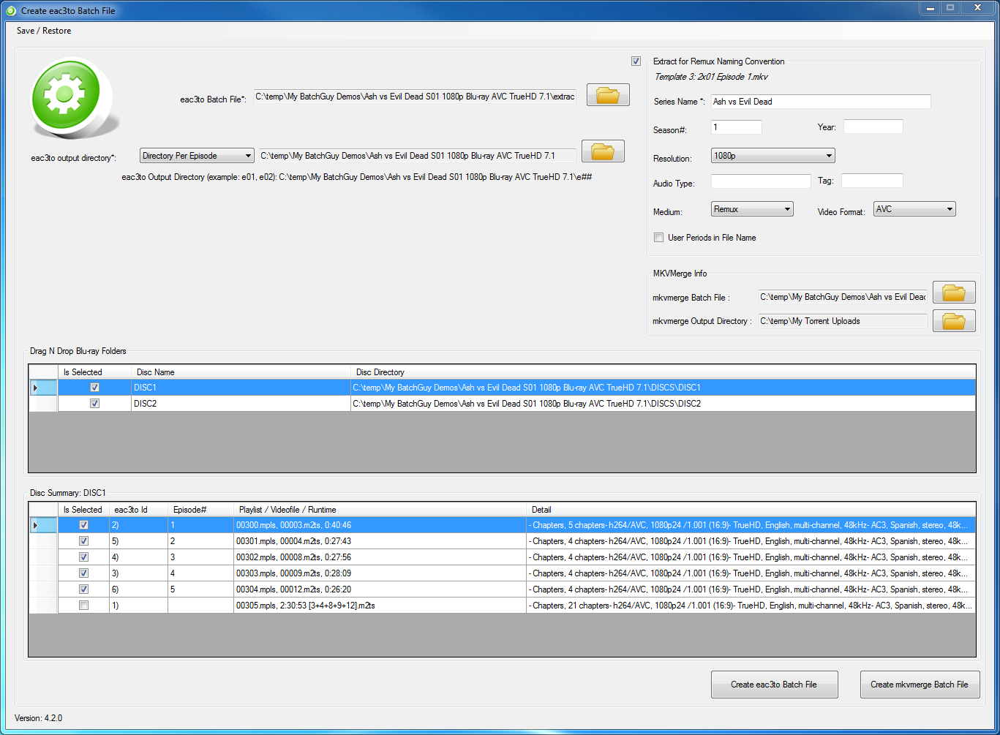
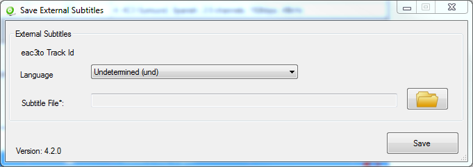
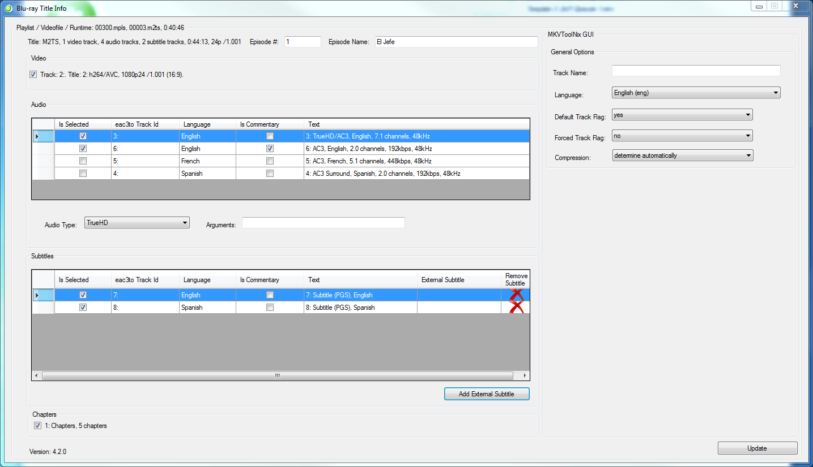
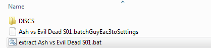

(VIP)
(VIP) 3 years, 11 months ago -
3 years, 11 months ago - ![[Quote]](./Remuxing-Remuxing-TV-Blu-ray-Discs-with-BatchGuy-_-Approved-Tutorials-_-Support-_-Forums_files/page_copy.png "Quote")

Introduction
What is BatchGuy?
One of my hobbies is to collect full Blu-ray discs and to either remux or encode them. I am a huge fan of TV Shows, so I typically work with multiple discs that contain tv series that can have over 30 episodes.
The problem that I faced is that most of the GUI tools available do not allow you to work with Blu-rays from a batch point of view. This is fine for movies but having to manually work with each stream on each disc for each episode is very tiresome. Because of this, I decided to make my own tool to ease some of the pain.
As I continued to make modifications to BatchGuy, I started to think that this tool could possibly be helpful to other Blu-ray encoders and remuxers such as myself, so I decided to share this tool with the community.
You can find the latest release of BatchGuy on Github here
In this tutorial, I will be showing you how to remux TV Show Blu-ray discs with BatchGuy.
Required Tools and Dependencies
- Windows 7, 8, 10 x64
- Microsoft .Net Framework 4.5+
- MKVToolNix GUI
- eac3to
- Ripped Blu-ray discs
- BatchGuy
Tips Before Starting
- Make sure you know the correct episode order of the TV Show you are encoding
- Make sure you understand the audio and subtitle streams inside of the Blu-ray ie Commentary, SDH, Force Captions etc etc
BatchGuy Tips
- All BatchGuy Grids can be sorted by double-clicking the header row
- The (.batchGuyEac3toSettings) file sits at the heart of BatchGuy, so ensure that you save this file after entering information on each screen
Step 1. Get an untouched TV Blu-ray DiscYou can get an untouched TV Blu-ray disc from BTN, other trackers, Usenet or rip a Blu-ray disc that you purchased.
Step 2. Install MKVToolNix GUI for WindowsBatchGuy will use mkvmerge, which comes with MKVToolNix GUI, to mux in your extracted Blu-ray artifacts. You can find the MKVToolNix GUI Windows installer here
Step 3. Get eac3toYou can get eac3to here. Save and unzip eac3to to the directory of your choosing.
Step 4. Get BatchGuyThe latest version of BatchGuy can be found here. Save and unzip the BatchGuy folder to a directory of your choosing.
Step 5.Open up BatchGuy and choose Settings. Ensure that all of the exe paths have been specified, choose a Remux Naming Convention Template, set your default BluRay Title Info audio input/output mappings, and defaults for audio and subtitle language and mkvemerge. Once you are done, use the menu located at the top left corner of the screen to save your settings.

Step 6.Next, on the main menu, choose Create eac3to Batch File
Step 7.On the Create eac3to Batch File, choose the location where you would like to save your eac3to batch file
Step 8.Choose whether you want BatchGuy to extract the files in a single directory or in a directory per playlist, based upon the episode number you specify (for this tutorial, directory per playlist has been chosen)
Step 9.Check the Extract for Remux checkbox at the top of the screen and enter in the Series Name and all the other relevant informaton based upon the Remux Naming Convention Template you chose on the BatchGuy Settings Screen, the mkvemerge batch file location and the mkvmerge output directory
Step 10.Drag and Drop your Blu-ray discs onto the first grid and select the discs you would like to extract
Step 11.On the Disc summary grid, select the summaries (episodes) you would like to extract

Step 12.Double-click each summary item (episode) on the Disc summary grid to open up the Blu-ray Title Info Screen
Step 13.On the Blu-ray Title Info Screen, enter in the episode number (you must tell BatchGuy what the correct episode numbers are)
Step 14.Enter in the episode name (optional)
Step 15.Choose the video, audio, subtitles, chapters (at least 1 of these must be chosen)
Step 16.Enter the MKVToolNix Track Name, Language, Default Track Flag and Forced Track Flag on the right of the screen (BatchGuy will attempt to set the language automatically based upon the eac3to information. If you chose not to enable audio and subtitle language defaults, the English audio default track flag will be defaulted to "yes" and all other audio and subtitles will be defaulted to "no" and the forced track flag will be set to "no"

Step 17.Next, if you need to add external subtitles, press the Add External Subtitle Button and choose the external subtitle language and spcify the location of the subtitle file and press save. Once you have done thisa, press the update button on the bottom right of the BluRay Title Info Screen.


Step 18.On the Create eac3to Batch File Screen, save the (.batchGuyEac3toSettings) file by using the menu located at the upper left corner of the screen and then click the Create eac3to Batch File button and then click the Create mkvmerge Batch File menu items
Step 19.Find the eac3to (.bat) file BatchGuy created and double-click it to start extracting the Blu-ray tracks

Step 20.After the Blu-ray files have been extracted, find the extracted files (in this example a directory per playlist)
Step 21.Find the mkvmerge (.bat) file BatchGuy created and double-click it to start remuxing the Blu-ray tracks
Step 22.Once the mkvmerge (.bat) file has completed remuxing the Blu-ray files, navigate to the the directory that you chose to output the files and see the remuxed files
Special Thanks
Just wanted to take the time to send a special thanks to all my fellow HDBits members, remuxers and encoders for providing technical expertise when needed, feature requests, reporting bugs and providing constructive suggestions.
Also, the Github wiki version of this guide can be found here
Last edited by Katara 3 years, 10 months ago
 (Legend)
(Legend) (The Fattest of Unicorns & Choiest of Johns, UNICHOIN!) 3 years, 10 months ago -
(The Fattest of Unicorns & Choiest of Johns, UNICHOIN!) 3 years, 10 months ago - 
 (Master)
(Step by step I made my way from the slums of Myr to the BTN small council chamber - Potterhead.) 2 years, 3 months ago -
(Master)
(Step by step I made my way from the slums of Myr to the BTN small council chamber - Potterhead.) 2 years, 3 months ago -